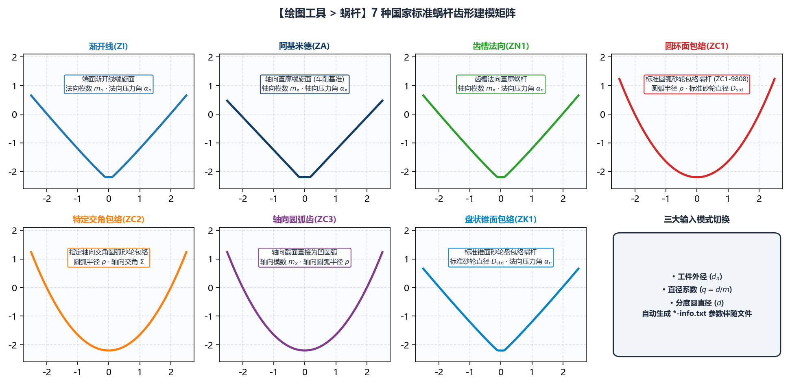

5.5 七种标准蜗杆建模
绘图工具 -> 蜗杆 按 DIN 3975 / GB/T 10085 标准提供 5 大类共 7 种精密圆柱蜗杆端面齿形建模。
七种蜗杆类型一览

| 二级标签页 | 三级标签页 | 代号 | 成形机理与专属参数 |
|---|---|---|---|
渐开线(ZI) |
— | ZI | 渐开线螺旋面蜗杆（高精分度用） |
阿基米德(ZA) |
— | ZA | 轴向截面直线廓形；定义 轴向压力角 |
法向直廓(ZN) |
齿槽法向(ZN1) |
ZN1 | 法向截面直线廓形，便于车削与通用磨削 |
圆弧圆柱(ZC) |
圆环面包络(ZC1) |
ZC1 | 凸圆弧盘砂轮包络（如 ZC1-9808）；专属 圆弧半径 与 标准砂轮直径 |
圆弧圆柱(ZC) |
特定交角包络(ZC2) |
ZC2 | 非理论螺旋角砂轮轴交角包络；专属 圆弧半径 与 轴向交角 |
圆弧圆柱(ZC) |
轴向圆弧齿(ZC3) |
ZC3 | 轴向截形直接为圆弧；专属 圆弧半径 与 轴向压力角 |
锥面包络(ZK) |
盘状锥面包络(ZK1) |
ZK1 | 双锥面盘砂轮/铣刀包络；专属 标准砂轮直径 |
三种 输入模式
所有蜗杆面板第 1 行均可切换直径定义基准：
工件外径 (da)（默认）：由蜗杆外径与模数齿高反推分度圆；直径系数 (q)：按d = q × mx计算分度圆直径；分度圆直径 (d)：直接输入分度圆直径（如ZC1-9808填入98.1）。
通用与专属参数配置
| 参数名称 | 适用类型 | 工程说明 |
|---|---|---|
轴向模数 / 头数 |
全部 7 种 | 决定 导程 = π × 轴向模数 × 头数（如 ZC1-9808 为 8.5 / 8） |
圆弧半径 (ρ) |
ZC1 / ZC2 / ZC3 |
母线圆弧半径（如 ZC1-9808 填 42.5） |
标准砂轮直径 (Dw0) |
ZC1 / ZK1 |
生成标准齿面的名义基准砂轮直径（如 ZC1-9808 填 500.0）；磨削砂轮变小后的偏差由 基本参数 自动补偿 |
轴向交角 |
ZC2 |
成形砂轮轴与蜗杆轴交角（°） |
法向/轴向压力角 + #6bb1aa |
全部 7 种 | ZA/ZC3 为轴向压力角，其余为法向压力角；支持右/左独立微调 |
变位系数 / 齿厚系数 + #6bb1aa |
全部 7 种 | 默认 0 / 0.5；可用 #6bb1aa 微调量控制三针尺寸或弦齿厚 |
齿高模式 / 修整延长 / 齿顶倒圆半径 |
全部 7 种 | 同渐开线模块设置 |
后续工艺衔接
- 精磨修整路线：将生成的
*.dxf（DXF 齿形类型 = 端面(左)）导入基本参数，生成多砂轮直径修整宏程序； - 粗车车刀路线：先在
工具箱 -> 曲线转换转为法向曲线，再传入工具箱 -> 车刀计算输出线切割 DXF（见第 9.4 节案例）。